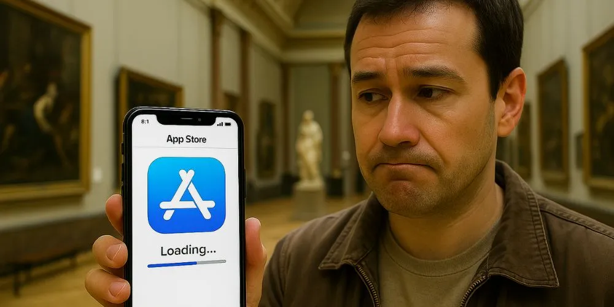
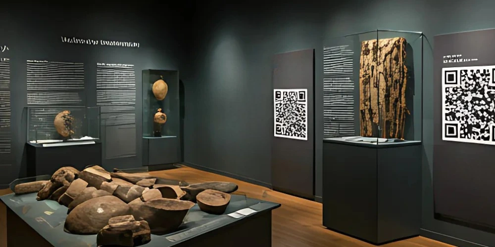
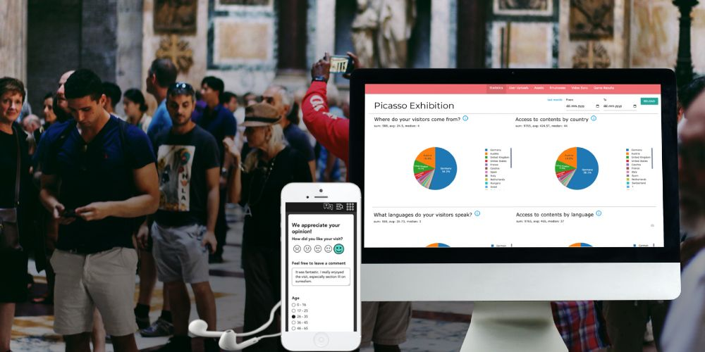
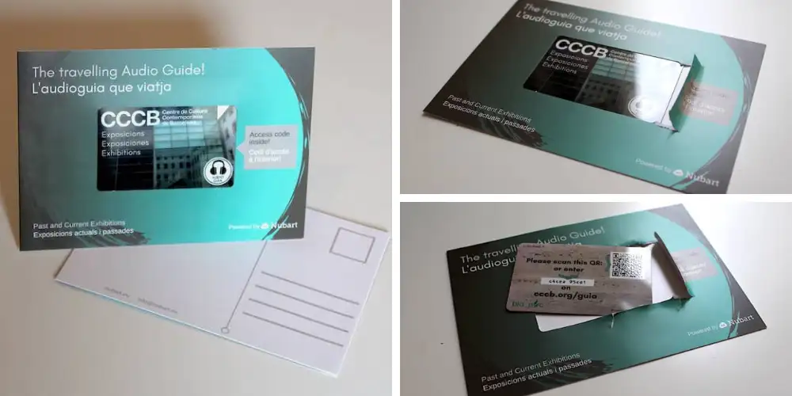

¿Se puede cobrar por una audioguía con código QR?
No todos los sistemas de audioguía por QR pueden venderse. Descubra qué necesita un museo para cobrar por una audioguía móvil, qué precios funcionan mejor y qué porcentaje de visitantes suele adquirirla.

La brecha de seguridad de la que nadie habla en la traducción simultánea por IA
El NDA está firmado y el DPA revisado, pero ¿quién puede acceder realmente al stream en directo? Por qué los códigos QR genéricos son una puerta abierta y cómo la tecnología LWAC patentada por Nubart la cierra.

Por qué fallan las audioguías con GPS para excursiones en barco, y cómo hacerlas mejor
Las megafonías molestan a los pasajeros. Las apps nativas hunden la tasa de uso. Y el GPS basado en navegador sobre los teléfonos de los pasajeros falla más de lo que admiten los proveedores. Qué necesita realmente un sistema de comentarios fiable para barcos y autobuses turísticos.

Qué hacer cuando tus intérpretes no pueden venir: IA como plan B para eventos en directo
Los intérpretes son difíciles de encontrar, fáciles de perder por imprevistos de viaje y casi imposibles de sustituir a última hora. Así puede la interpretación por IA convertirse en tu plan B — y por qué la mayoría de soluciones no están preparadas para serlo.

Modo offline para audioguías de museos: cuándo conviene, cuándo no y cómo hacerlo bien
¿Streaming, offline total o precarga selectiva? Una guía práctica para elegir el modo adecuado según la conectividad real de tu espacio.

Qué podemos esperar (y qué no) de la interpretación por IA frente a la interpretación humana
Desde la perspectiva de una intérprete profesional: por qué exigimos a la IA la perfección que nunca pedimos a los humanos y qué podemos esperar realmente de la traducción simultánea por IA.

La baja tasa de uso de las apps nativas de audioguía para museos
Un análisis en profundidad de datos reales muestra que menos del 3 % de los visitantes de museos utilizan aplicaciones de audioguía, lo que plantea serias dudas sobre su eficacia.

Cómo traducir audioguías: buenas prácticas de Nubart
Descubre las mejores prácticas de Nubart para traducir audioguías. Directrices para la adaptación cultural, la claridad y la redacción de frases fáciles de pronunciar.
Cómo sacar el máximo partido a Nubart LIVE en tus viajes de grupo
Nubart LIVE es ideal para viajes guiados en grupo, pero es recomendable conocer algunos consejos antes de empezar para garantizar una experiencia satisfactoria.

Cómo mejorar la experiencia de los visitantes con códigos QR en tu museo
Tras la pandemia de Covid, los códigos QR se han vuelto más populares que nunca. Aprovéchalos al máximo en tu museo.
Audioguía por control remoto para visitas guiadas
¿Tienes problemas logísticos para organizar las visitas guiadas? Nuestra audioguía por QR manejada por control remoto es ideal para rutas en barco, en bus o para grupos de visitantes multilingües.

Guía para implementar una PWA como Audioguía en un museo
¿Está pensando en implementar una web-app como audioguía para su museo? Aquí tiene una guía con toda la información necesaria: CMS, modelos de negocio, y más.

Las audioguías de Nubart son accesibles
La accesibilidad es una preocupación creciente en los museos. Con las audioguías de Nubart podrá cumplir todos los requisitos.

Voces de inteligencia artificial para audioguías - ¿Valen la pena?
Las voces artificiales están de moda. Prometen una producción rentable y rápida. Pero, ¿son realmente adecuadas para una audioguía?

Obtenga datos sobre sus visitantes con una audioguía digital
Analizar la audiencia de un museo requiere datos estadísticos sobre los visitantes. Una audioguía digital ofrece esta información de manera no intrusiva.

Scroll frente a clic: qué tipo de navegación funciona mejor en una audioguía digital
¿Scroll o clic? El modelo de navegación de una audioguía digital determina si los visitantes la encuentran fácil de usar y cuántas pistas escuchan realmente.

Cómo escribir audioguías para niños
Las audioguías para niños tienen requerimientos muy específicos. Aquí algunos consejos para convertir su visita al museo en una experiencia.

Cómo escribir el guion de una audioguía
Escribir para una audioguía es muy diferente a escribir un texto de sala o una pieza para el catálogo de una exposición. Aquí algunos consejos.

Audioguías como postal para la tienda del museo
Las audioguías digitales en formato postal son un producto único para la tienda de tu museo y contribuyen a darlo a conocer.